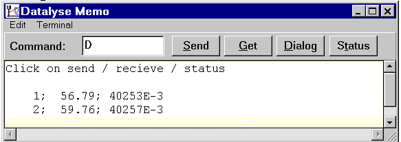
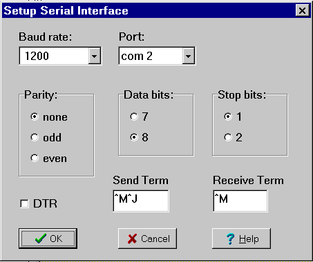

The terminal can be used to test the connection to the device.

When Dialog is used Datalyse calculates the time since the first measurement, and measurement no., time and the value is written in the memo. You can copy the data to a spreadsheet or draw a graph.
Terminal | Setup serial interface

Here you setup Baud rate, Data bits, Stop bits, Parity, Com port and DTR.
See also the information about baud rate etc. in the device descriptions.
^M equals CR (#13) and ^J equals LF(#10).
Be aware that Receive Term is one character, namely the last character sent by the device. Datalyse uses this as it tells that no more characters will be sent from the device.
A lot of devices only use ^M as Send Term. Some devices do not have a Send Term.